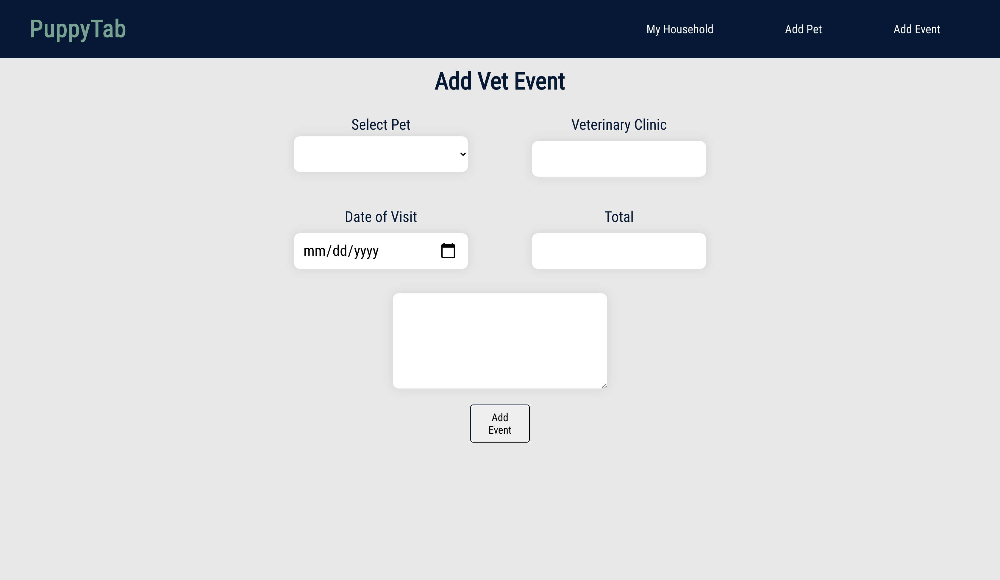

Pre Coding
Growing up, I never was really sure what I wanted to do. I earned a BA in psychology and even interned at a psychiatric office, but it wasn't for me. I loved art, but never found a career in it. My best friend and spouse, a software engineer, had been encouraging me from day one to try to learn to code but I resisted with an endless supply of excuses.
On July 4, 2018 Alex and I participated in our first transport; we helped coordinate the pull and transport of two dogs from an animal control in Wichita, KS to their new home in New Jersey. The transport was coordinated between complete strangers, over a 'last chance' post and through Facebook's direct messaging. Thus, my passion to help shelter dogs get from one point to their future home was born, as well as our collective brain child, PuppyCab, to be made in their favorite framework, Angular.
Learning
In March 2020, I decided that I wanted to learn to code (finally). Alex and I planned to begin our project together, PuppyCab, when my skills were ready, so I started working through the CodeCademy HTML, CSS, and JavaScript courses in the evenings after work. I made my first cohesive JavaScript game, Chore Door , through the site and then began planning my own personal project, a pet care tracker, to help me keep track of the weekly and monthly medication administration for my own pets. Shortly after, the first incarnation of PuppyTab was born and I continued to work through different JavaScript cirriculum until I became extremely comfortable with the language.
When I acheived an intermidate understanding of the language, I decided to begin learning my first framework, React; I found the organization of the components and using JSX to write JavaScript and HTML in the same file to be a smooth transition. I refactored the original PuppyTab into a React project while creating another React project, Ravenous, through CodeCademy and made my first call to Yelp's API. At the same time, I dove into the new world of server side scripting with Express.
At almost a year into my coding journey, I was accepted, and currently participating, in LaunchCode's CoderGirl program. I'm developing a deep understanding of the JavaScript language as well as unit testing and professional best practices, and am excited to soon be learning Angular.
PuppyTab React
PuppyTab is a pet care tracker to help pet parents keep track of their pet's records and health history; having three dogs myself, I needed a simple way to keep track of when my pets have a vet visit or when I administer weekly allergy shots. Through PuppyTab, users can create pet profiles and submit event briefs for their pets. In the future, I plan to add a calender to view an entire household's, or a single pet's, upcoming and past events and an event log screen for each individual pet.

By creating a full stack application, I've gained exposure to advanced React concepts including React Router, state, and lifecycle hooks. I also created an API for PuppyTab using Express and Knex, a framework that allows me to write SQL commands and prepare to incorporate a different database in the future than SQLite, which I'm currently using for development. Currently, PuppyTab has functional forms to allow users to create pet profiles and submit veterinary, grooming, and medication events for their pets.
Next, I will create an individual pet view to display more information, including any medications and the pet's primary veterinarian, as well as an event log for each pet. The event log will dynamically display past events and their details.
The Future
In the beginning of 2020, I aspired to become a full stack developer; today, I am proud to say I've achieved that. I am excited to round out my repitiore and advance my development skills as I seek to begin my professional career and eager to one day use PuppyTab to organize my furry family's records and invoices.